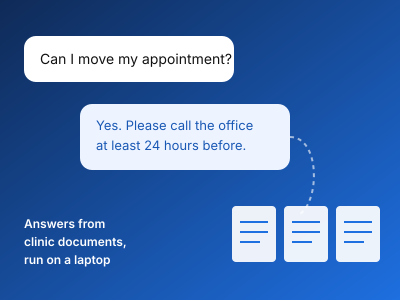
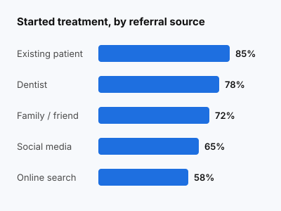

After more than ten years running the brand and marketing of an online store, I now study Artificial Intelligence at Atlantis University.
My projects look at how AI can answer customers’ routine questions and show which people go on to become customers.

The Human-Centered AI Marketing System
A 90-day plan for businesses that want to use AI tools in their marketing. I wrote the steps for using AI to study customer feedback, write content, personalize customer messages and read marketing data. The result is a 31-page workbook with tools and AI prompts for each step.

Local AI Assistant for an Orthodontic Front Office
A plan for an AI assistant that answers routine front-office questions at an orthodontic practice, such as appointments, consultations and payment policies. I wrote the proposal for running a small language model (Llama 3.2 3B) on a laptop with Ollama and having it look up answers in a set of fictional clinic documents, with no patient data and no medical advice. The result is a project plan for my Natural Language Processing course, including a test of 20 to 30 questions to compare the model with and without the document lookup.

Predicting Which Orthodontic Patients Start Treatment
A machine learning project on which prospective patients of an orthodontic practice go on to start treatment after their first consultation. I cleaned and prepared a dataset of 500 patient leads and made charts comparing treatment starts by marketing channel, referral source and distance from the clinic. In this data, attending the consultation and follow-up contact were most closely linked to starting treatment, and patients referred by existing patients started treatment most often (85%).